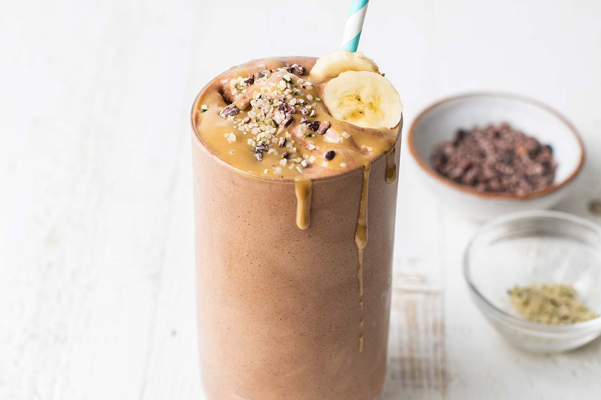

Chocolate Protein Smoothie

Description
I'm not always a morning person, but I certainly do go hangry if I don't
eat breakfast. This is an easy, delicious way to have some protein in the
morning, and with the healthy fats and fiber, it keeps my full until
lunch.
Ingredients
- 1 serving your favorite chocolate protein powder
- 1 cup dairy-free milk
- 1 handful frozen spinach
- 1 tbs peanut butter
- 1/2 frozen banana
Steps
- Add all of the ingredients to a blender.
-
Blend it up until smooth and creamy! If it's not blending, add more milk
as needed.
- Serve and enjoy.